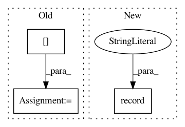

61773f29e1e39ed34718e2403d08b3ed31f968c5,doc/examples/reconst_csd.py,,,#,27
Before Change
response"s function"s ODF. Here is how:
data_small = data[20:30, 55:65, 38:39]
from dipy.reconst.csdeconv import recursive_response
response = recursive_response(gtab, data_small, mask=None, sh_order=8, peak_thr=0.01, init_fa=0.05, init_trace=0.0021, iter=8, convergence=0.01)
After Change
fvtk.add(ren, response_actor)
fvtk.record(ren, out_path="csd_recursive_response.png", size=(200, 200))
.. figure:: csd_recursive_response.png
:align: center
In pattern: SUPERPATTERN
Frequency: 3
Non-data size: 3
Instances
Project Name: nipy/dipy
Commit Name: 61773f29e1e39ed34718e2403d08b3ed31f968c5
Time: 2015-03-13
Author: chantaltax88@gmail.com
File Name: doc/examples/reconst_csd.py
Class Name:
Method Name:
Project Name: rlworkgroup/garage
Commit Name: e09e6dc678f9b9c198ed361eea0dffa7749bc553
Time: 2020-05-01
Author: 43084978+yonghyuc@users.noreply.github.com
File Name: src/garage/torch/algos/vpg.py
Class Name: VPG
Method Name: train_once
Project Name: nipy/dipy
Commit Name: 27d10570af678e1059920c4ae895860dda11433c
Time: 2017-06-26
Author: garyfallidis@gmail.com
File Name: doc/examples/tracking_quick_start.py
Class Name:
Method Name: